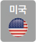

[SPECIAL THEME]Expert
새로운 비즈니스가 불러온 변화된 라이프스타일
가속화 O4O와 하이퍼로컬 시대
코로나19는 우리 삶의 방향을 통째로 바꾸어놓았다. 특히 가속화된 디지털 전환 속도는상상을 뛰어넘는다.
그 변화의 틈에서 새로운 오프라인과 온라인의 결합 형태인 O4O의 개념이대두되고,
우리의 생활 범위와 소비 권역이 자연스럽게 동네 상권을 중심으로 움직이는하이퍼로컬 시대로 전환하는 중이다.
Writer. 김덕진(한국인사이트연구소 부소장)
O2O 서비스 성장의 한계
O2O는 Online to Offline의 줄임말로, 모바일을 중심으로 온라인과 오프라인이 결합하는현상을 의미한다. 스마트폰 앱과 인터넷을 통해 음식을 주문하고, 택시・렌터카를 호출하거나 숙박 시설을 예약하는등 실시간으로 서비스를 제공하는 공급자와 이용자를 연결해주는 서비스로 이른바 배달 플랫폼 서비스, 택시 플랫폼서비스 등으로 부르는 서비스를 통칭한다. 하지만 이 O2O서비스는 분명 오프라인에 있는 매장과 소비자를 온라인앱을 기반으로 연결해주지만, 오프라인 매장 입장에서 보면 썩 기분 좋은 서비스는 아니다.일반 O2O 형태 서비스들이 온라인과 오프라인을 연결하고 중간에서 수수료를 취하는 형태의 수익 구조를 갖추고있기 때문이다. 거래는 많아도 오프라인 매장의 이익률은적을 수밖에 없다. 또 온라인의 판매 데이터와 고객 정보 역시 플랫폼이 보유해 O2O 플랫폼에서의 매출이 오프라인으로 연결되기 힘든 경우가 많다. 확보한 온라인 고객을 오프라인의 실제 매장으로 연결해 추가 수익을 발생시킬 수 없을까? 바로 이런 관점에서 하이브리드 오프라인 개념이 생겨났다. 하이브리드 오프라인은 O2O 비즈니스에오프라인 비즈니스를 결합해 이익을 극대화한다는 개념으로 오프라인을 위한 온라인, O4O라는 용어로도 일컫는다.
1_ 온라인데이터와오프라인경험 데이터의
결합을 시도한 아마존의오프라인매장 ‘아마존GO’
O4O 서비스의 개념
O4O(Online for Offline)는 오프라인 비즈니스가 사업의 핵심 역할을 한다는 뜻이다. O2O가 서비스 중개 플랫폼이라면,O4O는 온라인을 통해 확보한 고객을 ‘오프라인으로 집중’시켜 이익률을 극대화한다는 개념이다. 특히 코로나19 이후 온라인을 통한 소비가 증가하고 다양화되면서 온라인으로만 판매하던 이커머스업체들이 역으로 오프라인을 통해차별화를 꾀하고 소비자와의 접점을 늘려가고 있다. 이러한 O4O 비즈니스는 O2O 서비스와 온라인 서비스를 통해얻은 고객의 구매 패턴, 검색 키워드, 관심사 등 온라인 비즈니스 데이터를 가공해 활용하는 것에서부터 시작한다.
O2O 서비스를 통해 남은 고객의 정보와 사용 이력 등을‘오프라인 비즈니스’로 다시 연결시키는 것이다. 확보한 고객의 비즈니스 데이터를 오프라인 비즈니스로 연결해 실질적인 이익률을 높여간다는 것. 이것이 바로 O4O 비즈니스의 핵심 개념이다. 글로벌 IT・유통기업 아마존은 ‘아마존GO’라는 오프라인 매장을 통해 기존 고객의 온라인 데이터와 오프라인 경험 데이터를 결합하는 시도를 하고 있다. 2018년 1월 미국 시애틀 아마존 본사 1층에 처음으로 오픈한 아마존GO 매장은 계산대가 없고 결제를 기다리는 줄도 없다. 내가 사고 싶은 물건을 그냥들고 나오기만 하면 된다. 단, 아마존GO 무인 매장을 이용하려면 아마존GO 앱을 설치하고 내 계정으로 로그인해야한다. 앱에서 다양한 메뉴도 볼 수 있고, 내가 구매한 제품의 내역도 확인할 수 있다.
인공지능 카메라가 모든 매장 상황을 촬영하고 고객의 소비 행위를 분석한다. 매장 내부에 설치되어 움직임 등을 감지하는 센서들은 자율주행차에도 탑재하는 첨단 센서다.이 센서 또한 매장 내 사람들의 움직임과 구매한 물품 등 쇼핑과 관련한 각종 정보를 수집하는 데 활용한다. 이렇게 모인 고객의 다양한 행동 데이터는 아마존 온라인 쇼핑몰에도 반영되어 고객을 더욱 잘 파악할 수 있게 만든다.
온라인과 오프라인의 시너지 극대화
최근 신세계 이마트24가 코엑스 스타필드에 완전 스마트무인 매장 1호점을 오픈한 것을 시작으로 다양한 무인 스마트 매장을 선보이겠다고 발표한 것도 같은 맥락이다. 온라인 커머스 비즈니스가 핫한 요즘, 최근 국내 백화점 빅3는 오히려 오프라인 중심의 ‘혁신 매장’에 초점을 맞추고있다.대표적 사례가 ‘더현대 서울’이다. 이는 서울 시내 백화점중 최대 규모이며, 실내 공원 조성과 인공 폭포 설치 등 공간의 절반을 휴식・문화 공간으로 꾸며 소비자를 끌어들여사상 최대 실적을 올렸다. 또한 온라인 패션 플랫폼인 무신사는 오프라인 매장 ‘무신사 스탠다드 홍대’를 열었고, 중고 거래 온라인 플랫폼 번개장터도 오프라인 공간 ‘BGZT랩’을 선보이며 기존 온라인 회원과의 접점을 오프라인으로늘려나가고 있다. 오프라인 거점인 매장은 지역 기반 비즈니스를 진행하는 데 매우 중요하다. 앞서 언급한 대로 지역 기반의 고객 반응, 고객 트렌드, 고객 행동을 바로바로볼 수 있기 때문이다.
2_ 코로나19이후오프라인매장의 중요성이 강조되고있다.
사진은 온라인패션플랫폼무신사의 오프라인매장‘무신사스탠다드 홍대’전경
하이퍼로컬 시대와 O4O 비즈니스
코로나19는 우리의 생활 반경을 좁게 만들었다. 재택근무,장거리 외출 자제 등이 길어지면서 라이프스타일이 우리도모르는 사이 변한 것이다. 이에 따라 소비 권역 역시 동네상권을 중심으로 좁아졌다. 이 같은 동네 상권을 이용하는흐름은 소비 지표에서도 확인할 수 있다.
극도의(Hyper) 좁은 지역(Local) 내에서 지역 간 커뮤니티나 상품을 판매하는 하이퍼로컬(Hyperlocal)에 대한 관심이 높아지고 있다.슬리퍼를 신고 돌아다닐 수 있다는 슬세권 안에서 그지역만의 맞춤 전략을 만들고, 이를 통해 수익을 내려는 행위가 대형 IT 기업을 비롯해 유통・마케팅업체에서 이루어지고 있다. 기존의 온라인 미디어가 시공간을 초월해 방대했다면, 하이퍼로컬은 특정 지역에 중점을 두고 운영한다.
하이퍼로컬 서비스는 전 세계적으로 확산되는 추세다. 2021년 2월 미국 텍사스를 강타한 한파 사태 때 주목받은 업체가 있다.동네를 기반으로 중고 거래와 부동산・구인구직・가게 광고 같은 콘텐츠를 제공하는 미국의 하이퍼로컬 스타트업‘넥스트도어’다. 한파로 인한 정전・단수에 생활필수품마저 부족해지자 사람들은 넥스트도어에 몰렸다. 자신이 가진 마스크와 생필품을 나누는가 하면, 고립된 사람들은게시판에서 생존 정보를 공유하기도 했다. 미국 4가구당1가구꼴로 넥스트도어를 이용할 정도였다. 넥스트도어의 기업 가치는 2021년 10월 50억 달러(약 5조6,680억원)로 평가받을 만큼 하이퍼로컬 서비스에 대한 관심은코로나19라는 전 세계적 현상과 함께 급부상하면서 주목받고 있다.
3_ 우리나라의대표적하이퍼로컬, 중고거래앱‘당근마켓’
4_ 2021년2월미국텍사스를강타한 한파사태때동네를기반으로하는
하이퍼로컬스타트업‘넥스트도어’가 급부상했다.
다양한 지역 기반 하이퍼로컬 서비스
좁은 지역에서 상품을 매개로 한 커뮤니티 활동이 이루어지는하이퍼로컬 비즈니스에서 필요한 요소 중 하나가 공간이다. 지역 내 상업공간을 직거래 장소나 지역 커뮤니티 공간으로 활용하는 것이 중요하다. 하이퍼로컬 플랫폼의 온라인 데이터와 특정 지역 기반의데이터는 서로 결합함으로써 강력한 시너지를 낼 수 있기때문이다. 하이퍼로컬이라는 트렌드는 특히 지역기반 소상공인에게는 기회이자 위기가 될 수 있다. 수많은 대형 기업이 동네의 특징에 따라 다양한 방식의 접근을시도하고 있는 지금, 조만간 앱을 통해 수집한 여러 가지지역별 빅데이터를 기반으로 그 지역에 특화된 오프라인거점들이 생겨날 것이 분명하기 때문이다.하이퍼로컬 기반의 온라인 플랫폼과 O4O 비즈니스가 만나는순간, 온라인과 오프라인의 결합이 지역에 불어넣는 새로운 경험을 줄 수 있는 곳만이 살아남을 것이다.
각국의하이퍼로컬 주요 현황
- 
-
넥스트도어
동네 기반 중고 거래‧부동산‧
구인구직등 지역 기반 소셜 미디어 앱 -
올리오
남은 식자재와 중고 물품을
이웃과 거래 -
메이퇀유쉬안
같은 아파트 주민끼리 필요한
물품을공동 구매하는 방식
-
당근마켓
동네 기반 중고 거래‧부동산‧구인구직
소셜 미디어 앱으로, 월 이용자 1,400만 명
네이버 네이버카페 기반 동네 커뮤니티
서비스‘이웃’ 출시(2020년 12월)
동네 게시판 성격의 ‘이웃 톡’ 기능 추가
(2021년 3월)
자료 각 업체, 블룸버그통신